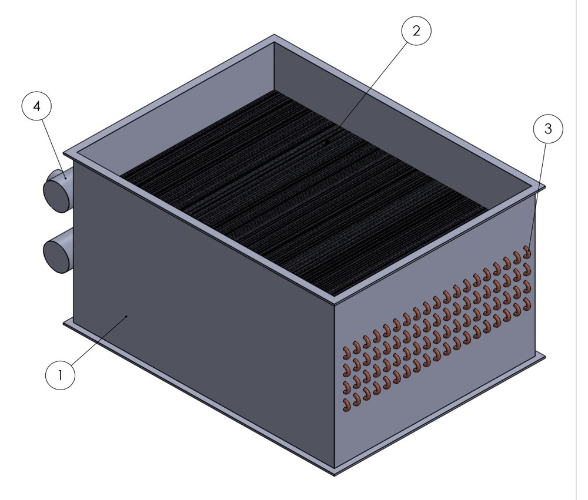
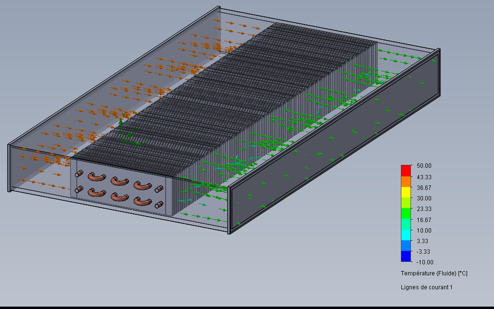

Licence thesis based on my internship at GSS (SONATRACH and SINOPEC), 2024
Cooling the air intake of an MS5002B gas turbine
- SolidWorks
- SolidWorks Flow Simulation
- Heat exchanger design
- Gas turbine performance
A gas turbine loses efficiency when the air it takes in is hot. The MS5002B is rated at 28 % efficiency at 15 °C, but at the Zarzaitine oil field the air reaches 41 °C in summer.
I designed a finned-tube heat exchanger that cools the intake air with chilled water before it reaches the compressor, then simulated it to choose the number of fins.
With 376 fins, estimated efficiency in July rises from 20.5 % to 27.0 %. Over the whole year, the average rises from 23.5 % to 27.9 %.

- DesignContinuous finned-tube exchanger with copper tubes and aluminium fins, modelled in SolidWorks and placed in the turbine intake duct.
- SimulateNine CFD runs on a representative sub-model: 200, 250 and 376 fins, with air at 20, 32 and 40 °C and water at 5 °C.
- AnalyseOutlet air temperature converted into monthly efficiency with a correction rule from manufacturer data. 376 fins gave the coldest air all year.


